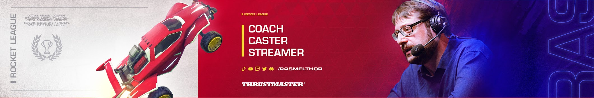
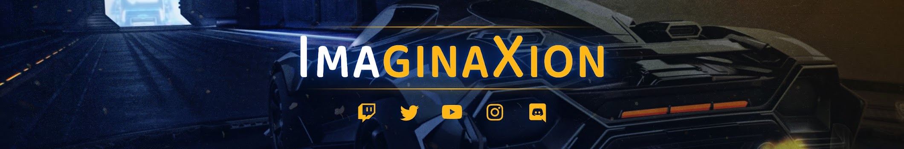
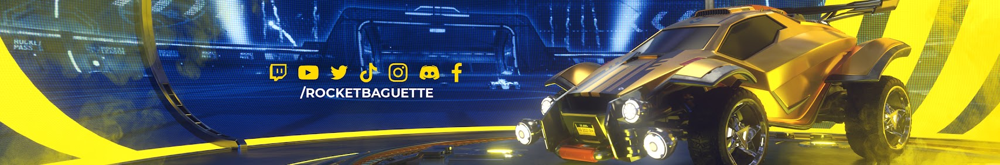

Le Rocket League français ne manque pas de créateurs talentueux. Que ce soit sur Tiktok, Youtube ou même Twitch, vous en trouverez pour tous les goûts : plus ou moins âgés, aguéris ou débutants, vous trouverez ci-dessus une liste de créateurs qui peuvent être à la fois ludiques et divertissants !
Vous retrouverez
Ci-dessus vous retrouverez des créateurs liés à Rocket League. Nous allons vous présenter des classiques mais aussi essayer de vous faire découvrir de plus petits créateurs. Si vous souhaitez progresser, ou bien simplement rigoler, voir les 2 temps en même temps, vous êtes au bon endroit ! Nous vous souhaitons de trouver votre bonheur ! Si vous avez des question, regardez dans la FAQ.
Vous pouvez retrouver Rasmelthor sur Youtube et Twitch.

Rasmelthor est le coach le plus renommé du Youtube français. Il est un excellent choix si vous souhaitez débuter Rocket League en ayant une rapide acquisition des bases du jeu. Sur sa chaîne, vous pouvez retrouver des formats courts, d'une dizaine de minutes, ainsi que de long formats, de plus d'une heure. Il sait se faire clair dans ses propos et sera un atout considérable à votre compréhension tactique du jeu. De plus, il est souvent en live sur Twitch pour faire des coachings privés à des joueurs de tout niveau. C'est le choix parfait pour poser les bases du jeu et de les approfondir légèrement ! Et pas d'inquiétude à se faire, bien qu'il sache se montrer très sérieux lorsque le moment le demande, on manque rarement de rire à ses blagues ou aux bêtises du chat. Si vous le souhaitez, vous pouvez même le contacter afin de prendre un coaching privé, que ce soit en live ou hors live, afin d'avoir une approche très personnel de votre gameplay. Dernièrement, il est aussi caster sur la chaîne Rocket Baguette, mais nous en parlons un peu plus bas.
Vous pouvez retrouver Imaginaxion sur Youtube et Twitch.

Imaginaxion est un coach très renommé sur la scène Rocket League française. Il s'adresse à la fois aux joueurs très avancés, voir professionnel (il est d'ailleurs coach de l'équipe Saudade, composé de jeuens joueurs français prometteurs). Il sait voir le potentiel en les personnes qu'il coach, il a réussi à faire passer en moins d'un an un joueur qui était Champion 3, Grand Champion 3, à l'âge de seulement 13 ans (en équivalent football, c'est comme passer du district au semi-professionnel). Il fait à la fois du coaching personnel, ou pour des équipes en voie de professionnalisation, mais aussi des vidéos pour le grand public sur la chaîne RocketBaguette avec ses "Imanalyse" dans lesquels il analyse des matchs professionnel en expliquant de manière claire des phases de jeu. Il est rarement en live sur Twitch et ne poste que peu de vidéos cependant. Mais si vous souhaitez progresser, c'est une très bonne option.
Le coach Gil_2 n'est certe pas le plus populaire, mais il est pour autant très efficace. Effectuant un travail de l'ombre sur Internet, il propulse de jeunes joueurs vers les sommets de Rocket League. Il a par exemple coaché le jeune "Yujin", qui fait ses débuts en RLCS et est un grand espoir français, ou même "Juicy", joueur ayant explosé en 2024 en remportant le Major de Copenhague avec l'équipe GentleMates. Vous pouvez aussi aller sur son Twitter pour en apprendre plus sur sa personne !
Casts des compétitions e-sportives
Vous pouvez retrouver RocketBaguette sur Youtube et Twitch.

L'esport Rocket League est un des plus suivis du monde, et encore plus particulièrement en France. Depuis plus de 5 ans, Rocket Baguette propose un cast de qualité des compétitions RLCS européennes et nord-américaines, mais aussi de tournois régionaux français tels que la Rising League. Avec plus d'une dizaine de caster de qualité, vivez les matchs avec sensation. De plus, ils se déplacent en présentiel sur certains évènements majeurs afin de nous proposer une expérience immersive avec de plus l'ambiance du public en fond. Mais ils ne font pas que ça. Vous pouvez retrouver des interviews de joueurs professionnels en français sur leur chaîne Twitch ainsi que sur leur chaîne Youtube. Et ils publient tous les matchs en replay ainsi que leurs émissions gratuitement sur Youtube. Si vous souhaitez commencer à regarder l'esport Rocket League, c'est vraiment la chaîne parfaite !
Là où RocketBaguette propose un cast (à peu près) impartial, Kamet0 est quant-à-lui à fond pour la Karmine Corp. Et c'est totalemet normal, puisqu'il en est le fondateur et CEO ! Que vous soyez fan ou non de la Karmine Corp, ça reste un excellent de vivre les matchs de cette équipe à travers une ambiance folle. Il sait retranscrire ses émotions sans pour autant les surjouer. Avec le roster composé de Atow, Vatira et Rise, la Karmine se place parmis les meilleurs équipe du monde en 2024, comptant bien aller chercher le titre final. Cependant, Kamet0 ne caste que les matchs de son équipe, donc vous ne pouvez pas suivre l'entièreté de l'esport sur sa chaîne. De plus, malgré son emploi du temps (très) chargé, il se dévoue tout de même pour faire les déplacements lors des LAN (compétitions en présentiel) toujours accompagné du Blue Wall (association de supporters de la Karmine Corp).
Autrefois grand joueur professionnel de Call Of Duty, le French Monster Gotaga, bien que n'étant plus joueur professionnel, est resté proche de l'esport. Accompagné de Squeezie et Brawks, il a fondé il y a un an la structure esportive Gentle Mates, qui est arrivé sur Rocket League en 2024. A l'image de Kamet0, Gotaga retranscrit les matchs de son équipe (seulement) avec passion. Il a d'ailleurs déjà battu un record, car il a été le streamer ayant réuni le plus de viewers en simultané sur Twitch (en dehors de la chaîne officielle RocketLeague), avec plus de 157000 viewers à l'occasion d'un match contre la Karmine Corp. On peut le dire, c'est une entrée fracassante, de plus que son équipe a déjà gagné un titre international, le Major de Copenhague, les plaçant comme provisoirement champions du monde. Nous le recommandons, comme Kamet0, pour suivre les matchs de sa structure.
Kaydop est le plus grand créateur Rocket League de France. C'est même le plus populaire sur Twitch dans le monde entier. A la fois joueur pro et créateur de contenu, il est au sommet depuis de longues années. Triple champion du monde, sextuple champion d'Europe, plus de 200 finales de tournois jouées, il est considéré comme peut-être le plus grand esportif de France ! Il est actuellement joueur chez la structure Solary après un long passage chez la Team Vitality, aux côtés de Chausette45 et AztraL. Possédant une chaîne Youtube de 500k abonnés, ainsi qu'une chaîne Twitch de presque 800k abonnés, on peut dire qu'il a su conquérir le coeur des fans. De plus, il est déjà apparu dans des vidéos avec de grands créateurs comme Gotaga, Kamet0, LeBouseuh, Inoxtag ou encore Doigby (voir ici). Il est en live quasiment tous les soirs et bien qu'il joue principalement à Rocket League, il propose aussi d'autres jeux sur sa chaîne (survie, FPS, multijoueur,...). Si vous souhaitez passer un bon moment, c'est vraiment la personne parfaite.
D7 est le plus grand youtubeur francophone spécialisé sur le jeu Rocket League. En postant des vidéos de manière régulière, il a su s'imposer en atteignant presque 500k abonnés ! En proposant toujours du contenu de qualité et en divertissant son contenu, toujours accompagné de son accolyte GaspowRL, un autre créateur de contenu, on peut le considérer comme le meilleur sur Rocket League, mais aussi comme le "MrBeast" de Rocket League car il n'hésite pas à miser des sommes très élevés lors de défis. En plus de sa régularité sur Youtube, il est aussi très présent sur Twitch en faisant des lives sur Twitch presque quotidiennement. Mais il a aussi su conquérir les coeurs en dehors de Rocket League puisqu'il a ouvert une chaîne multigaming ayant déjà dépassé les 100k abonnés et plusieurs millions de vues, en seulement une dizaine de vidéos postées dessus. Il ose prendre des risques en s'écartant de son jeu principal et aussi en investissant dans des locaux afin d'héberger son équipe (miniaturiste, monteurs...) pour offrir la meilleure qualité de vidéo possible.
Mawkzy est le meilleur joueur du monde dans le mode du jeu du 1vs1. Il a déjà remporté de nombreuses compétitions internationales et régionales. Et, à l'image de Kaydop, il est aussi présent sur Twitch et Youtube, sur lequel il poste une vidéo par jour. Il a marqué l'histoire du Twitch Rocket League en atteignant un nombre de subs (abonnement payant) record avec plus de 10500 lors d'un subathon (un concept propre à Twitch qui consiste à faire un live avec un compteur qui descend, et les abonnés peuvent rajouter du temps de live en payant des abonnements), qui est d'ailleurs toujours en cours à l'heure actuelle, après 1 mois de live. Il se place grâce à l'engagement de sa communauté à la 5ème place des streamers français ayant le plus de subs à l'heure actuelle, devant certaines têtes d'affiches telles que Squeezie. Personne ne sait jusqu'où il pourra aller grâce à ce concept. C'est une personne très populaire mais à l'humour très particulier qui pourrait déplaire à un certain public. C'est à vous de voir !